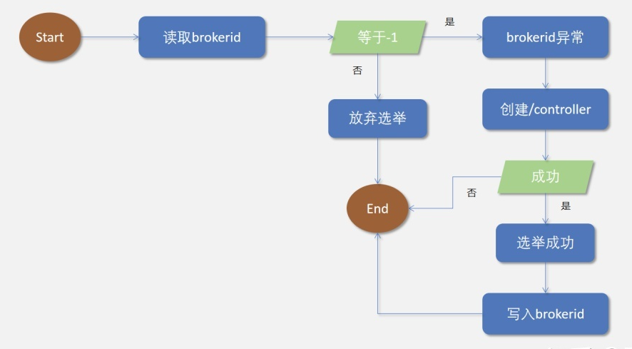

Ch08-Kafka 之选举
March 12, 2019
Kafka 选举主要体现在两个地方，一个是 Broker 的选举，另一个是 Partition 的选举。
1. Controller 选举 #
Kafka 中 Controller 的选举的工作依赖于 Zookeeper，所有的 broker 在 Zookeeper 中抢先注册 /controller 如果注册到了，那么该 broker 便是 Controller。

Controller 被选举出来，作为整个 Broker 集群的管理者，管理所有的集群信息和元数据信息。它的职责包括下面几部分：
- 处理 Broker 节点的上线和下线，包括自然下线、宕机和网络不可达导致的集群变动，Controller 需要及时更新集群元数据，并将集群变化通知到所有的 Broker 集群节点；
- 创建 Topic 或者 Topic 扩容分区，Controller 需要负责分区副本的分配工作，并主导 Topic 分区副本的 Leader 选举。
- 管理集群中所有的副本和分区的状态机，监听状态机变化事件，并作出相应的处理。Kafka 分区和副本数据采用状态机的方式管理，分区和副本的变化都在状态机内会引起状态机状态的变更，从而触发相应的变化事件。
2. Partition 选举 #
由 Controller 从 Zookeeper 中读取当前分区的所有 ISR(in-sync replicas) 集合，然后选择一个 Replica 升级为 Leader。目前支持的选择算法有 NoOpLeaderSelector，OfflinePartitionLeader，ReassignedPartitionLeader，PreferredReplicaPartitionLeader，ControlledShutdownLeader。